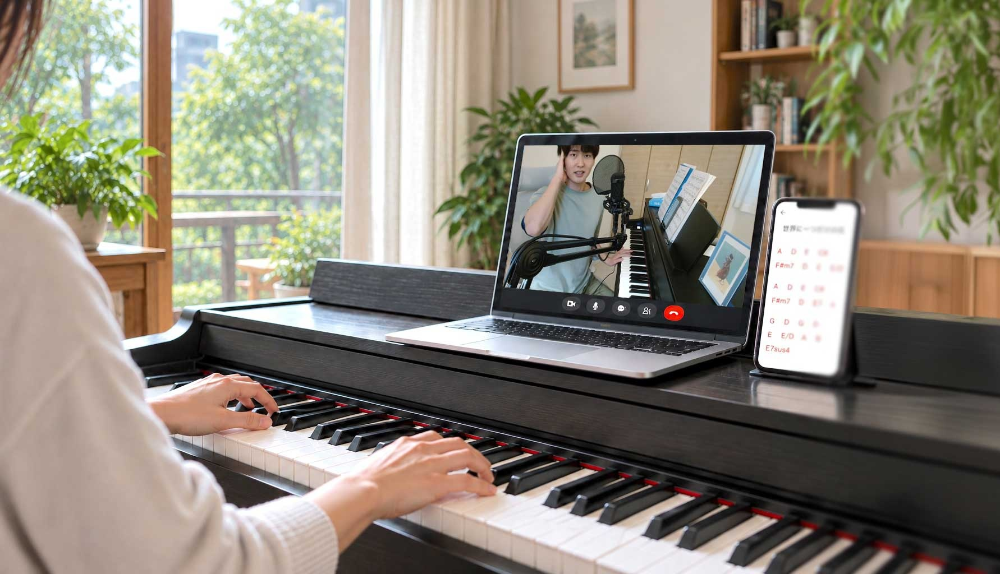
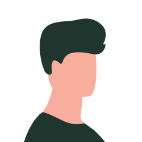
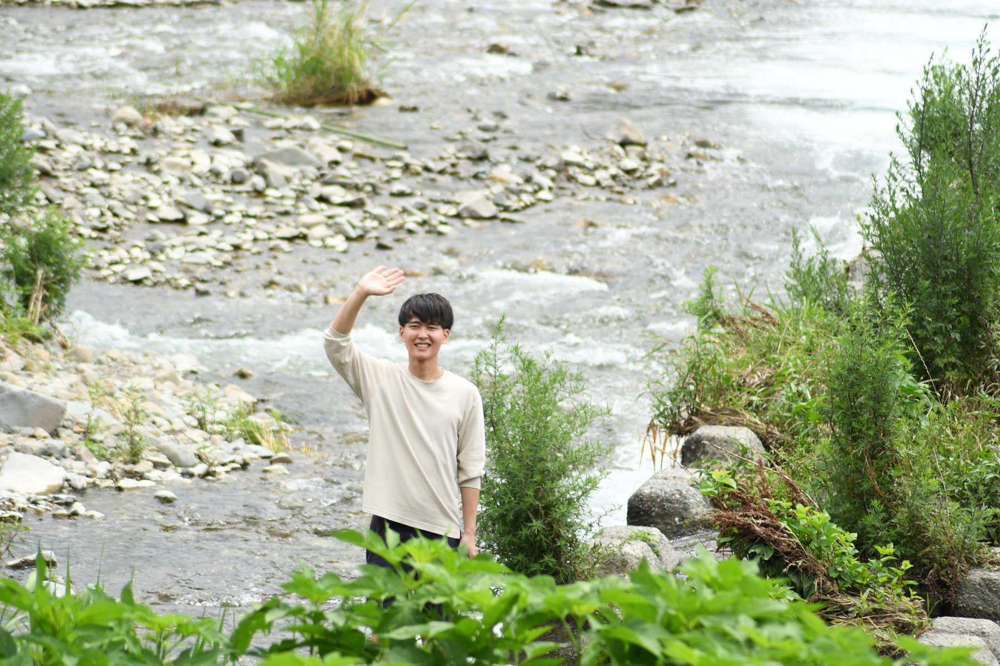

20代・男性
「初心者の方には自信を持って勧めます！」
３回のレッスンを受けましたが、非常に満足しました！
以前、ピアノを独学で学んでいたのですが、和音を理解できず挫折しました。
ですが、、講師の方は曲を弾くために必要な知識をピックアップして伝えてくれるためすぐに曲の形にすることができて成果がすぐ見えるため楽しく学べました。
ピアノは弾きたいけどハードルが高いと感じている初心者の方には自信を持って勧めます！

オンライン ピアノ弾き語りレッスン
これまでの生徒さんの９割が、
３ヶ月以内に１曲弾き語りできるようになりました
難しい理論や練習曲より「好きな曲を、まず形にする」ことを大切にしています。J-POPや洋楽を中心に、弾きたい曲を一緒に選びます。
弾き語りでは楽譜を読む必要がありません。スマホで見られるコード譜サイト「U-FRET」を使うので、楽譜を買う必要もありません。
通う時間はいりません。電子ピアノやキーボードがあれば、ご自宅からレッスンを受けられます。これまで全てのレッスンをオンラインで行ってきました。
ピアノ弾き語り講師
はじめまして、ピアノ弾き語り講師のかみむらです。
実は私も、ピアノ未経験から弾き語りを始めました。
「楽譜が読めない」
「指が思うように動かない」――
最初につまずくポイントは、身をもって知っています。
だからこそレッスンでは、難しい理論や練習曲より
「好きな曲を、まず形にする」ことを大切にしています。
これまで大人の初心者さんから小学生まで、10名以上の生徒さんを担当し、その９割が３ヶ月以内に１曲弾き語りできるようになりました。
「いつか弾けたらいいな」と
思っていた、あの曲。
その“いつか”を、
今日から始めてみませんか？
まずは体験レッスン1,000円で、お気軽にどうぞ。
Instagramで「体験」とDMください
20代・男性
３回のレッスンを受けましたが、非常に満足しました！
以前、ピアノを独学で学んでいたのですが、和音を理解できず挫折しました。
ですが、、講師の方は曲を弾くために必要な知識をピックアップして伝えてくれるためすぐに曲の形にすることができて成果がすぐ見えるため楽しく学べました。
ピアノは弾きたいけどハードルが高いと感じている初心者の方には自信を持って勧めます！
30代・男性
まだまだ「満ちていく」については不完全で、これで送っては失礼かなとも思いましたが、少しは形にすることができたように思います。自分１人でやっていては、ここまで到達することはできませんでした。
僕の能力、努力不足は否めませんが、嬉しいです。ありがとうございます。
難しいと感じているところは、今回の課題内容（満ちていくを弾く）は中々難しく、苦労しました（してます）！
しかし、こんな短期間で満ちていくを雰囲気でも弾けるようになるとは思ってませんでした。
ビデオレッスンはどれも丁寧でわかりにくいところはなかったです。
30代・女性
半年くらいお世話になっていますが、そのおかげでコードを見ただけでなんとなくは弾けるようになってきました！
「この曲きれいな響きだな〜、素敵な曲だな〜」と感じた音楽を、聞いて終わりでなく、自分で弾くこともできるというのは、こんなにも楽しいことなんですね。実は家族に内緒で練習しているのですが、いつか目の前で弾いて驚かせたいなと思っています。
まだまだ修行中ですので、引き続きよろしくお願いいたします。

20代・男性
以前、独学でピアノの教本を読みながら練習をしていた時期があるのですが、その時はある程度進んだ段階でコード進行の理論が分からず、何を練習したら良いのか分からない状態になってしまいました。
今回のレッスンでその部分が明確になり、弾き語りを行うのに必要な情報を先生が整理しまとめてレッスンしてくれたのでとても理解が進みました。同時に、教えてくれた理論をもって練習すれば曲が弾けるイメージが湧き、モチベーションが上がりました。
モニター価格 700円
モニター価格 1,050円
Instagramで「体験」とDMください
もちろん大丈夫です！私自身も、全くの未経験から弾き語りを始めました。最初はみなさん未経験からのスタートです。
大丈夫です！弾き語りでは楽譜を読む必要がありません。譜読みが苦手な方でも、楽しく練習に取り組んでいただけます。
J-POPや洋楽を中心に、U-FRETにコード進行が載っている曲であれば対応できます。ただし弾き語りに向かない曲もありますので、選曲は事前にご相談させてください。
全く問題ありません。これまでにも「伴奏だけ練習したい」という生徒さんがいらっしゃいました。
以下の３つをご準備ください。
また、ご自身とピアノの手元が映るようにセッティングしていただくため、スマホ・タブレット用のスタンドや三脚があると便利です。
電子ピアノやキーボードなど、鍵盤楽器をご準備いただく必要があります。
これまで全てのレッスンをオンラインで行ってきましたが、問題なく進められています。
年齢制限は設けていません。コミュニケーションがスムーズに取れる状態であれば大丈夫です。事前にご相談ください。
基本的には必要ありません。
小学生のお子さまの場合は、保護者さまとのご連絡をおすすめしています。お子さまと直接やりとりすることも可能ですが、SNS上の文章でのやりとりになりますので、それが可能な場合に限ります。
レッスンの様子（ビフォーアフター）を撮影し、SNSやホームページで紹介させていただける方が対象です。顔出しは不要で、手元の映像と音声のみを使用します。
モニターの方は、体験レッスン・正規レッスンのどちらも３割引になります。
前日までにご連絡いただいた場合は、振替レッスンを承ります。当日のご連絡や無断欠席の場合は振替できませんので、ご了承ください。
お振込みでお願いしています。
週１回受講される生徒さんが多いです。ご希望に応じて、２週に１回や週２回など柔軟に対応します。
